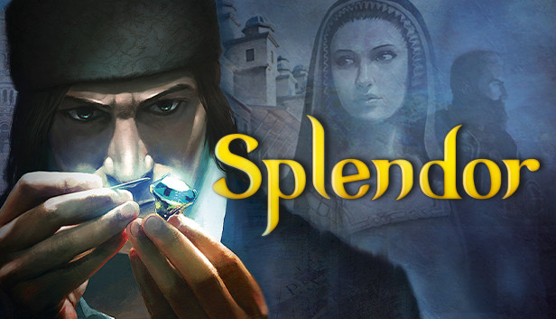

基礎遊戲規則
擴充角色介紹
先鋒
收藏家
地下商人
修女
繼位者
數學家
藝術家
雕琢師
牧師
律法家
革命者
祭司
關於我們

藝術家
初期 4.0
中期 4.0
末期 3.0
整體 3.7
>
技能
自己的回合拿取
流動寶石
時，可以
跳脫規則
任意拿取4顆黃金以外的
流動寶石
。
優點和缺點
優點
技能表現穩定，不容易受到敵手技能組合而影響表現
缺點
沒有使自己致勝的關鍵技能、策略
致勝策略
無

 技能表現穩定，不容易受到敵手技能組合而影響表現
技能表現穩定，不容易受到敵手技能組合而影響表現 沒有使自己致勝的關鍵技能、策略
沒有使自己致勝的關鍵技能、策略